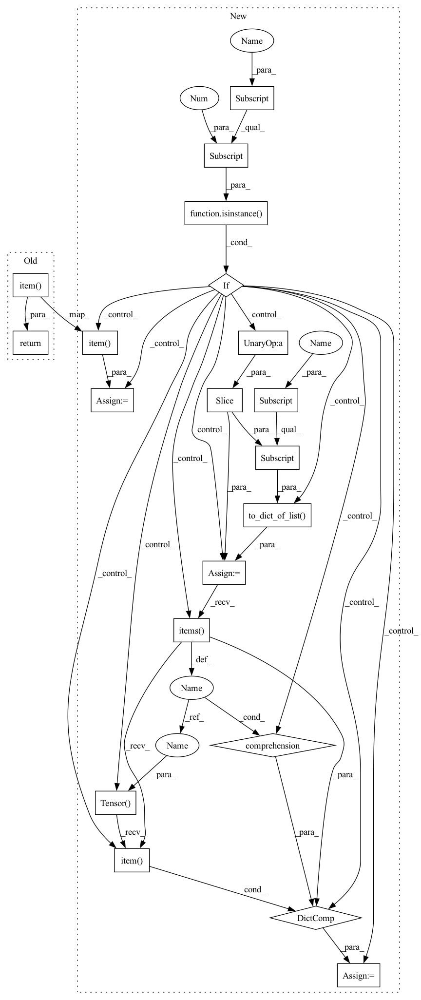

Pattern ID :38940
Before Change
if window_size is None or window_size > len(self._data[key]):
window_size = len(self._data[key])
return torch.Tensor(self._data[key][-window_size:]).sum().item()
def avg(self, key, by="_num_samples", window_size=None):
Return the average of the latest `window_size` values in the buffer.After Change
if window_size is None or window_size > len(self._data[key]):
window_size = len(self._data[key])
if isinstance( self._data[key][0] , dict) :
data = nncore.to_dict_of_list(self._data[key][-window_size:] )
sum = {k: torch.Tensor(v).sum().item() for k, v in data.items()}
else:
sum = torch.Tensor(self._data[key][-window_size:]).sum().item()
return sum
def avg(self, key, by="_num_samples", window_size=None):In pattern: SUPERPATTERN
Frequency: 3
Non-data size: 20
Instances Fragment ID: 110996655
Project Name: yeliudev/nncore
Commit Name: 240a12b1571547d4215297f7f4830ad0aab74e54
Time: 2020-03-24
Author: goolhanrry@gmail.com
File Name: nncore/engine/buffer.py
M Class Name: Buffer
N Class Name: Buffer
M Method Name: sum(3)
N Method Name: sum(3)
M Parent Class: object
N Parent Class: object
M File Name: nncore/engine/buffer.py
N File Name: nncore/engine/buffer.py
M Start Line: 138
M End Line: 138
N Start Line: 154
N End Line: 162
Before Change
if window_size is None or window_size > len(self._data[key]):
window_size = len(self._data[key])
return torch.Tensor(self._data[key][-window_size:]).mean().item()
def sum(self, key, window_size=None):
Return the sum of the latest `window_size` values in the buffer.After Change
if window_size is None or window_size > len(self._data[key]):
window_size = len(self._data[key])
if isinstance( self._data[key][0] , dict) :
data = nncore.to_dict_of_list(self._data[key][-window_size:] )
mean = {k: torch.Tensor(v).mean().item() for k, v in data.items()}
else:
mean = torch.Tensor(self._data[key][-window_size:]).mean().item()
return mean
def sum(self, key, window_size=None): Fragment ID: 110996657
Project Name: yeliudev/nncore
Commit Name: 240a12b1571547d4215297f7f4830ad0aab74e54
Time: 2020-03-24
Author: goolhanrry@gmail.com
File Name: nncore/engine/buffer.py
M Class Name: Buffer
N Class Name: Buffer
M Method Name: mean(3)
N Method Name: mean(3)
M Parent Class: object
N Parent Class: object
M File Name: nncore/engine/buffer.py
N File Name: nncore/engine/buffer.py
M Start Line: 121
M End Line: 121
N Start Line: 131
N End Line: 139
Before Change
if window_size is None or window_size > len(self._data[key]):
window_size = len(self._data[key])
return torch.Tensor(self._data[key][-window_size:]).median().item()
def mean(self, key, window_size=None):
Return the mean of the latest `window_size` values in the buffer.After Change
if window_size is None or window_size > len(self._data[key]):
window_size = len(self._data[key])
if isinstance( self._data[key][0] , dict) :
data = nncore.to_dict_of_list(self._data[key][-window_size:] )
median = {
k: torch.Tensor(v).median().item()
for k, v in data.items()
}
else:
median = torch.Tensor(
self._data[key][-window_size:]).median().item()
return median
def mean(self, key, window_size=None): Fragment ID: 110996656
Project Name: yeliudev/nncore
Commit Name: 240a12b1571547d4215297f7f4830ad0aab74e54
Time: 2020-03-24
Author: goolhanrry@gmail.com
File Name: nncore/engine/buffer.py
M Class Name: Buffer
N Class Name: Buffer
M Method Name: median(3)
N Method Name: median(3)
M Parent Class: object
N Parent Class: object
M File Name: nncore/engine/buffer.py
N File Name: nncore/engine/buffer.py
M Start Line: 104
M End Line: 104
N Start Line: 104
N End Line: 116